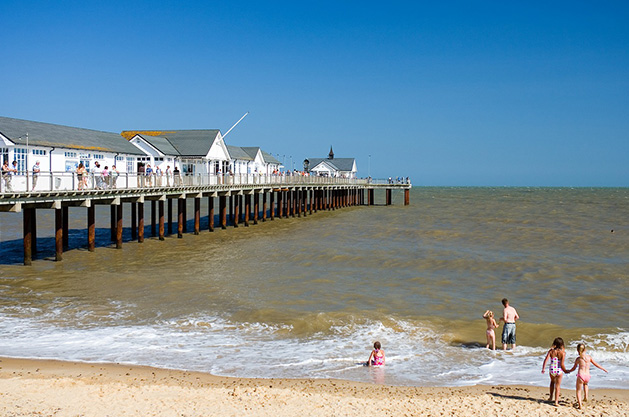

The day has come, or may be coming, to figure out what you want to do with all the time that comes with retirement. It is not just a question of on what, but also where you will be spending this time.
Take our handy quiz that will help guide your decision and get that retirement planning engine whirring.
-
Museum/Gallery, then a bite to eat
-
Family, friends, roast dinner... nap
-
Dog walk
-
Exploring somewhere new
-
Barbecue
-
Gardening
-
Exercising
-
Games with the kids/grandchildren
-
Schindler's List
-
The Great Escape
-
Gone With the Wind
-
The Godfather
-
Seeing the world
-
Living abroad
-
Saving for an adventure
-
Having more me-time
-
Julie Walters
-
Jeremy Irons
-
Muhammad Ali
-
Joanna Lumley
Your ideal retirement destination is... The Algarve, Portugal
You are obviously the outdoors-y kind of type, who craves a bit of excitement, so why not make retirement your next adventure! Up sticks and head to The Algarve, where you can experience a bit of Portuguese life without feeling too far away from home or out of your depth. You're not far from the rest of Europe so there's plenty of time to take another adventure when you are there.
{kind=link}
Your ideal retirement destination is... Cambridgeshire
You are a sophisticated type who knows there is a lot more culture left in the UK for you to experience. Cambridge is home to some of the most astounding minds and beautiful scenes in the UK, so you won't miss out on opportunities to stimulate your curious side. There is also plenty of time to spend entertaining loved ones or unwinding in the garden.
{kind=link}
Your ideal retirement destination is... Suffolk
Sprawling countryside and quaint villages are the order of the day in Suffolk. You'll have ample opportunity to spend hours exploring this expansive area. There are places in Suffolk that exude relaxation and many chances to indulge in things like the award-winning butchers in Wickham Market or the Friday Street Farm Shop in Saxmundham. An added bonus of Suffolk is the coastline; spend your days watching the waves roll and tides change whilst tucking into fish and chips in Aldeburgh or Southwold.
{kind=link}
Your ideal retirement destination is... Devon
Known as one of the happiest places to retire in the UK, Devon is as peaceful and romantic as you've always imagined. Sandy beaches, far-reaching moors and cosy cottages; Devon is ideal for those looking for a bit of peace and quiet without being totally cut off from the rest of the world. Opportunities to take up new hobbies such as fishing or boating are ample, and exercising outside will never be boring.
{kind=link}
Your ideal retirement destination is... Home Sweet Home
Sometimes there really is no place like home. If you're happy where you are, with all of your home comforts and loved ones around you, then why move anywhere? You now have all the time you can muster to see more of the world on different holiday trips, take some more me-time and brush up on that hobby you might have let slide.
{kind=link}